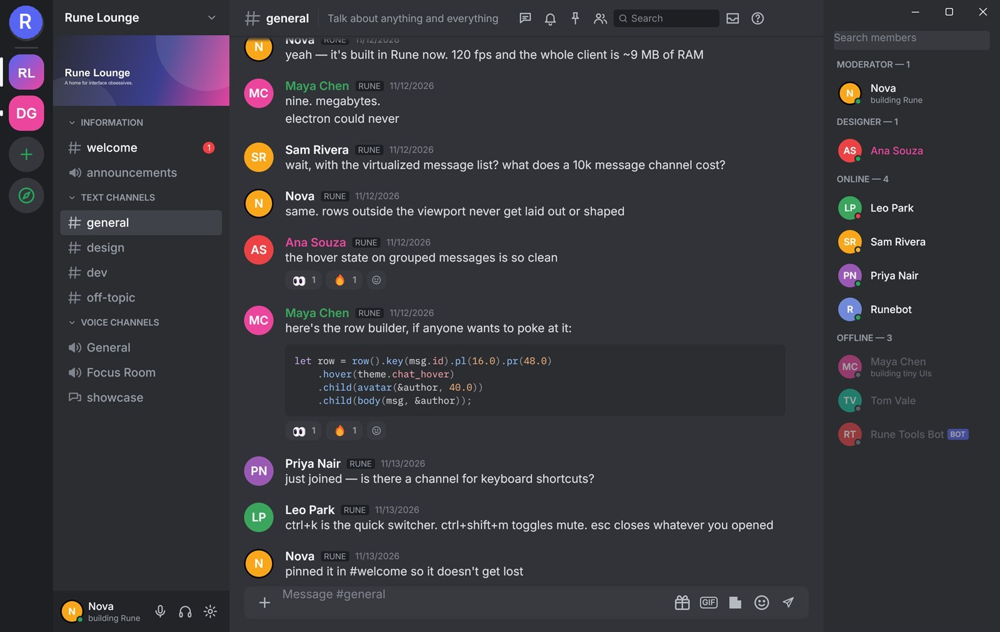
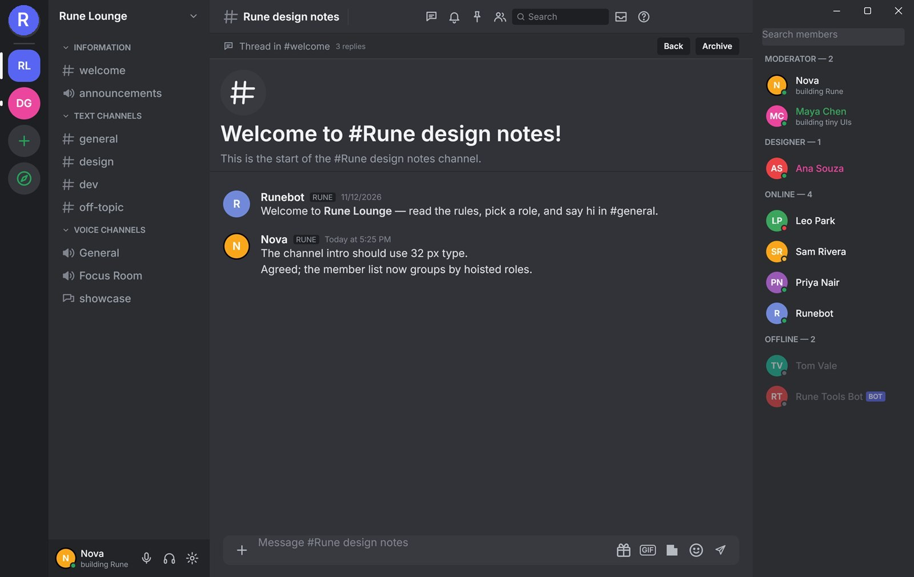
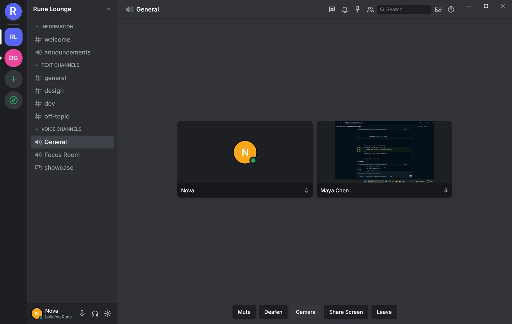
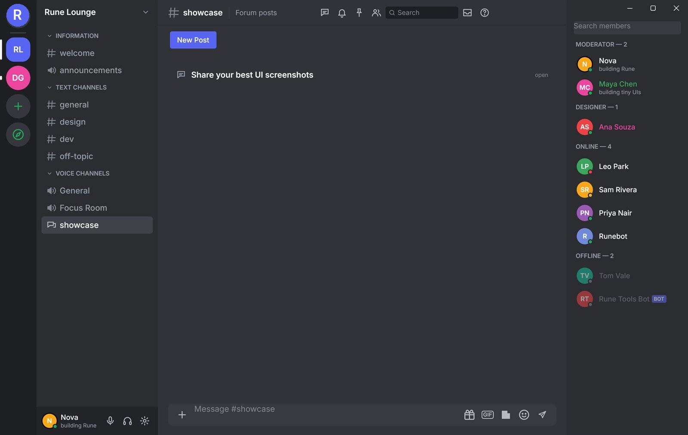

01 SELF-HOSTED CHAT / DESKTOP
YOUR CHAT. YOUR MACHINE. YOUR RULES.
Runecord is a self-hosted chat client with servers, channels, voice, DMs and a Rust backend that runs where you do. No cloud account, and nothing in the request path you don't control.
- PLATFORMS
- Windows / Linux
- RUNTIME
- Rust + Rune
- STORAGE
- Local / AES-256-GCM

Six things it does properly.
These are the parts that decide whether a chat client is livable after the first week.
Messaging
Channels, threads, reactions, pins and search. The message list stays smooth in long channels.
REALTIME 02Voice & video
Camera, screen share, soundboard, push-to-talk and per-person volume.
AUDIO / VIDEO 03Roles & permissions
Channel overwrites, timeouts, kicks, bans, prune previews, appeals and audit entries.
MODERATION 04Friends & DMs
Presence, group DMs, read state and one inbox for mentions and unread messages.
SOCIAL 05Profiles
Avatars, banners, effects, nameplates, role icons and custom status.
IDENTITY 06Self-hosted
Encrypted SQLite, hashed tokens and zero cloud dependencies.
STORAGEMessages keep their place.
Threads branch without noise, reactions land instantly, and a virtualized row list keeps long channels responsive. Search reaches the history you already have.
- Channels, threads, forums and pins
- Reactions, mentions and full-text search
- Attachments, embeds and encrypted uploads


A room, not a call.
Join a voice channel and talk. Share a screen, turn on the camera, or fire a soundboard clip while your mic is muted. Voice state syncs to every client in the server.
- Camera, screen share and simulcast
- Push-to-talk, sensitivity and mic test
- Soundboard and per-user volume
Moderation leaves a paper trail.
Roles, invites, discovery, scheduled events, timeouts, prune previews, ban appeals and audit entries. All of it ships with the server.
- Role hierarchies, icons and channel overwrites
- Invites, discovery and scheduled events
- Audit log, bans, timeouts and appeals

The server is yours.
So is the database.
Runecord stores its database and uploads in a folder you control. The database and CDN files are sealed with AES-256-GCM; session and bot tokens are stored as hashes.
- Key generated on first launch
- Encrypted flushes after writes
- Reverse-proxy friendly gateway and voice sockets
$ run.bat
[ok] backend 127.0.0.1:47800
[ok] client window opened
[key] data/runecord.db.enc
[note] keep data/key.bindata/HTTP + WSInstallers are built, not published.
Running build.bat produces a signed Windows installer, a portable executable and a Linux tarball in dist/, with a download page beside them. Nothing is hosted publicly yet.
| Platform | Target | Arch | Status | Build |
|---|---|---|---|---|
| Windows | Desktop client | x64 | PREVIEW | BUILD FROM SOURCE |
| Linux | Desktop client | x86_64 | PREVIEW | BUILD FROM SOURCE |
Build instructions: Build from source
Read this first.
Still curious? The source and the developer docs are open.
DEVELOPER PORTAL01 Is Runecord a chat client?
Runecord is an independent, self-hosted chat app with a familiar desktop layout. It talks only to the server you point it at.
02 Do I need my own server?
The desktop client talks to the Runecord backend. Run both with one launcher on the same machine, or host the backend on a box you control and point the client at that URL.
03 Where is my data?
In the backend's data/ folder. The database and uploads are encrypted with AES-256-GCM, and tokens are stored as hashes. Keep key.bin safe: without it the data cannot be read.
04 What does it cost?
Nothing. Runecord is self-hosted and has no subscription, cloud account or usage fees. You pay for the hardware you run it on.
05 Can I build bots and integrations?
Yes. Bot accounts, an HTTP API, a native WebSocket gateway and a compatible /api/v1 surface with a matching /gateway/v1.
06 How do I install it?
Run build.bat. It produces a signed Windows installer, a portable executable, a Linux tarball with an install script, and a download page in dist/. The binaries are published from there; this site does not host them.